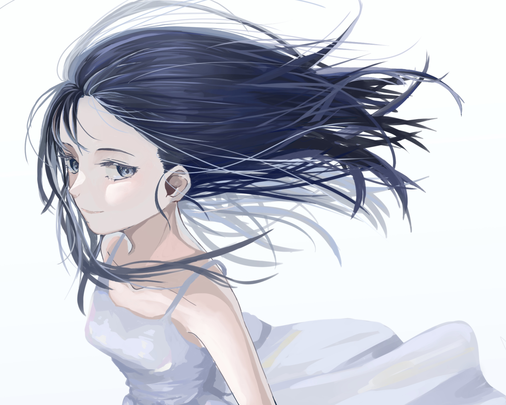

Illustration
風
風になびく髪の動きと、淡い青の空気感を意識して制作したオリジナルイラストです。

Overview
風になびく髪の流れや、淡い光の表現を意識して制作したオリジナルイラストです。 余白を活かしながら、静かで透明感のある雰囲気が伝わるように仕上げました。
青みのある色合いを中心にまとめ、キャラクターのやわらかさや空気感が自然に伝わるように意識しています。 髪の動きや光の入り方によって、画面全体に軽やかな印象が出るよう調整しました。
Concept
風・透明感・静けさをテーマに、青系の色味と余白を活かしたイラストです。 風を感じる髪の流れを中心に、画面全体にやわらかい動きが出るように制作しました。
背景は主張しすぎないようにまとめ、キャラクターの表情や髪の動きが引き立つバランスを意識しています。 静かな中にも空気の流れを感じられるような雰囲気を目指しました。
用途
オリジナルイラスト作品として制作しました。 ポートフォリオ内では、透明感のある色味やキャラクター表現、空気感の演出を伝える作品として掲載しています。
制作情報
- 制作区分：自主制作
- 制作期間：約2〜3週間 （作業時間：約60時間）
- 担当範囲：キャラクターイラスト制作 / 構図調整 / 配色調整 / 仕上げ
- 使用ソフト：CLIP STUDIO PAINT
- 制作形式：オリジナルイラスト
制作ポイント
髪の流れによって風を感じられるように、線の向きや毛束の動きを意識しました。 画面全体が重くならないよう、色味は淡い青を中心にまとめています。
また、余白を広く取ることで静かな空気感を出し、キャラクターの表情や髪の動きが自然に目に入るように調整しました。